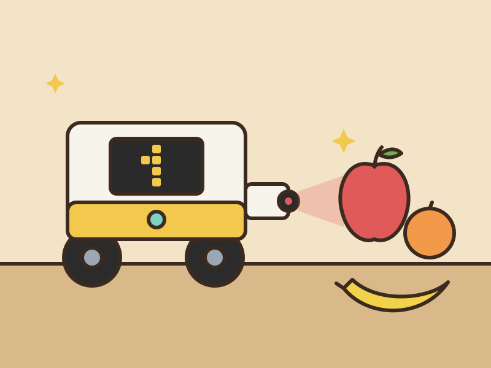

Fruit Scanner

For Project 12, I built a robot that learns to tell 3 fruits apart using a color sensor. It works a lot like my High or Low classifier from Project 11, except it looks at color instead of height, and instead of pointing an arm, it reacts differently to each fruit.
First I train it by showing it examples of each fruit and pressing the button. Then, in testing mode, I show it a fruit and it uses k-nearest neighbors (kNN) to guess which one it is:
- Fruit 1: plays a happy sound while the screen blinks a smiley face, then spins in a full circle.
- Fruit 2: plays a happy sound.
- Fruit 3: plays a sad sound, then shakes side to side.
Hardware setup
- Port A: color sensor
- Port B: button (a SPIKE force sensor)
- Ports E and F: drive motors, used for the spin and the shake
How to use it
- Training: the screen shows which fruit you’re training, 1, 2, or 3. Tap the button to save the fruit in front of the sensor. Hold it for 1 second to move on to the next fruit, which loops back around to 1 after 3.
- Switching to testing: turn the robot upside down and hold the button. Then flip it back over and it starts testing.
- Testing: the screen shows the fruit number it guesses,
-when nothing is in front of the sensor, or?when the color doesn’t look like anything it was trained on. You have to take the fruit away before it’ll react to the next one.
How the code works
Reading color. Each reading averages 5 red, green, blue, and brightness values from the color sensor. Instead of using the raw numbers, it uses how much of the total is red, green, and blue. That way, a fruit that’s a little closer or farther away (so brighter or darker) still looks like the same color. Brightness still counts a little, just less than the color.
Guessing the fruit. It finds the 3 saved examples with the closest colors, and they vote. The fruit with the most votes wins, and if there’s a tie, the closer one wins. If even the closest example is too different, it says ? instead of guessing.
Not reacting to random readings. It keeps its last 5 guesses and only reacts when 3 of them agree. That way, one weird reading doesn’t set it off, and it also doesn’t keep starting over every time a reading is different.
Flipping it over. The hub’s built-in motion sensor can tell which side is facing up, so the code checks that when the button is held to know whether to switch to testing.
Code
Hub program
from hub import port, light_matrix, sound, motion_sensor
import color_sensor
import force_sensor
import motor
import math
import time
SENSOR = port.A # color sensor
BUTTON = port.B # button (force sensor)
LEFT = port.E # drive motors
RIGHT = port.F
NUM_FRUITS = 3
K = 3 # examples that vote (keep it odd)
MIN_INTENSITY = 20 # darker than this = nothing in front of the sensor
MAX_MATCH = 20 # farther than this from every example = "?"
WINDOW = 5 # look at this many recent guesses...
NEED_VOTES = 3 # ...and react when this many of them agree
LONG_PRESS_MS = 1000 # hold this long for a long press
DEBUG = True # print every reading in testing mode
# The hub face that points up when the robot is upside down.
# The hub prints its up face on every long press, so you can check this.
UPSIDE_DOWN_FACE = motion_sensor.BOTTOM
SPIN_SPEED = 500
# How far each wheel turns for the robot to spin one full circle.
# Too short a spin? Make it bigger. Too far? Make it smaller.
SPIN_WHEEL_DEGREES = 720
WIGGLE_DEGREES = 90 # how far each wheel turns per side; bigger = wider shake
WIGGLES = 3 # how many times it goes side to side
WIGGLE_SPEED = 800 # how fast it shakes
# If the robot drives straight instead of spinning, change one of these to -1.
SPIN_LEFT = 1
SPIN_RIGHT = 1
HAPPY = [(523, 120), (659, 120), (784, 120), (1047, 300)]
SAD = [(392, 300), (370, 300), (349, 300), (262, 700)]
# Training data: a list of (color_features, fruit_number) pairs.
samples = []
def read_color():
# Returns (color features or None if nothing is there, brightness).
r_total = g_total = b_total = i_total = 0
for _ in range(5):
r, g, b, i = color_sensor.rgbi(SENSOR)
r_total += r
g_total += g
b_total += b
i_total += i
time.sleep_ms(10)
brightness = i_total / 5
if brightness < MIN_INTENSITY:
return None, brightness
# Use each color's share of the total, so a fruit that's a bit
# closer or farther (brighter or darker) still looks the same.
total = max(1, r_total + g_total + b_total)
return [
100 * r_total / total,
100 * g_total / total,
100 * b_total / total,
# Brightness counts a little, but less than the color.
brightness / 20,
], brightness
def color_gap(a, b):
# How different two color readings are (straight-line distance).
return math.sqrt(sum((x - y) ** 2 for x, y in zip(a, b)))
def check_button():
# Returns None, "short", or "long" once the button is let go.
if not force_sensor.pressed(BUTTON):
return None
start = time.ticks_ms()
long_press = False
while force_sensor.pressed(BUTTON):
if (
not long_press
and time.ticks_diff(time.ticks_ms(), start)
>= LONG_PRESS_MS
):
# Beep so you know you can let go.
sound.beep(1200, 100, 50)
long_press = True
time.sleep_ms(10)
return "long" if long_press else "short"
def upside_down():
return motion_sensor.up_face() == UPSIDE_DOWN_FACE
def k_nearest_neighbor(features):
# The K most similar examples vote on the fruit.
# Returns (fruit number or None, gap to the closest example).
scored = sorted(
(color_gap(features, s[0]), s[1]) for s in samples
)
neighbors = scored[:K]
closest_gap = neighbors[0][0]
if closest_gap > MAX_MATCH:
return None, closest_gap
# votes[fruit] = [vote count, total gap]
votes = {}
for gap, fruit in neighbors:
if fruit not in votes:
votes[fruit] = [0, 0]
votes[fruit][0] += 1
votes[fruit][1] += gap
# Most votes wins. If it's a tie, the closer fruit wins.
best = max(votes, key=lambda f: (votes[f][0], -votes[f][1]))
return best, closest_gap
def most_common(labels):
# (label, how many times) for the most common label in the list.
best, best_count = None, 0
for label in labels:
count = labels.count(label)
if count > best_count:
best, best_count = label, count
return best, best_count
def play(notes, blink=False):
# notes: list of (frequency, milliseconds)
# With blink, the smiley face turns on and off with each note.
for n, (freq, ms) in enumerate(notes):
if blink:
if n % 2 == 0:
light_matrix.show_image(light_matrix.IMAGE_HAPPY)
else:
light_matrix.clear()
sound.beep(freq, ms, 80)
time.sleep_ms(ms + 20)
def blink_for(ms):
# Blink the smiley face for this long.
on = True
for _ in range(ms // 250):
if on:
light_matrix.show_image(light_matrix.IMAGE_HAPPY)
else:
light_matrix.clear()
on = not on
time.sleep_ms(250)
def spin_360():
motor.run_for_degrees(LEFT, SPIN_WHEEL_DEGREES, SPIN_LEFT * SPIN_SPEED)
motor.run_for_degrees(RIGHT, SPIN_WHEEL_DEGREES, SPIN_RIGHT * SPIN_SPEED)
# Wait for the spin to finish.
time.sleep_ms(SPIN_WHEEL_DEGREES * 1000 // SPIN_SPEED + 200)
def turn(degrees, direction):
# Turn in place a little; direction is 1 or -1.
motor.run_for_degrees(LEFT, degrees, direction * SPIN_LEFT * WIGGLE_SPEED)
motor.run_for_degrees(RIGHT, degrees, direction * SPIN_RIGHT * WIGGLE_SPEED)
time.sleep_ms(degrees * 1000 // WIGGLE_SPEED + 50)
def shake_side_to_side():
# Start with half a turn so it shakes around where it started.
direction = 1
for i in range(WIGGLES * 2):
degrees = WIGGLE_DEGREES // 2 if i == 0 else WIGGLE_DEGREES
turn(degrees, direction)
direction = -direction
# Come back to the middle.
turn(WIGGLE_DEGREES // 2, direction)
motor.stop(LEFT)
motor.stop(RIGHT)
def react(fruit):
if fruit == 1:
# Happy sound and blinking, then a full spin a second later.
play(HAPPY, blink=True)
blink_for(1000)
light_matrix.write("1")
spin_360()
elif fruit == 2:
play(HAPPY)
else:
# Sad sound, then shake side to side.
play(SAD)
shake_side_to_side()
mode = "train"
fruit = 1
shown = "-" # what testing mode is showing
recent = [] # the last few guesses
light_matrix.write(str(fruit))
print("TRAINING fruit 1: tap to save, hold for the next fruit.")
print("Turn the robot upside down and hold to start testing.")
try:
while True:
if mode == "train":
press = check_button()
if press == "short":
features, brightness = read_color()
if features is None:
sound.beep(200, 300, 80)
print("Nothing in front of the sensor, try again",
"(brightness", round(brightness), ")")
else:
samples.append((features, fruit))
count = len([s for s in samples if s[1] == fruit])
sound.beep(880, 150, 80)
print("Fruit", fruit, "example #", count,
"color:", [round(f, 1) for f in features])
elif press == "long":
print("up face:", motion_sensor.up_face())
if upside_down():
if len(samples) == 0:
sound.beep(200, 300, 80)
print("Save at least one example first")
else:
mode = "test"
play([(660, 100), (880, 150)])
print("TESTING with", len(samples), "examples")
light_matrix.write("-")
# Wait until the robot is turned back over.
while upside_down():
time.sleep_ms(50)
print("Ready")
else:
# Loop 1 -> 2 -> 3 -> 1.
fruit = fruit % NUM_FRUITS + 1
light_matrix.write(str(fruit))
print("TRAINING fruit", fruit)
else:
features, brightness = read_color()
gap = None
if features is None:
label = "-"
else:
guess, gap = k_nearest_neighbor(features)
label = str(guess) if guess else "?"
if DEBUG:
print("read:", label,
"brightness:", round(brightness),
"gap:", None if gap is None else round(gap, 1))
# Keep only the last WINDOW guesses.
recent.append(label)
if len(recent) > WINDOW:
recent.pop(0)
best, votes = most_common(recent)
if votes >= NEED_VOTES and best != shown:
shown = best
light_matrix.write(shown)
print("GUESS:", shown)
if shown not in ("-", "?"):
react(int(shown))
# Start fresh after reacting.
recent = []
time.sleep_ms(20)
finally:
motor.stop(LEFT)
motor.stop(RIGHT)How the design changed
- I started from my Project 11 code and swapped the distance sensor for a color sensor. The first version used a motor arm that pointed at the fruit it guessed, like the high/low arm.
- Then I replaced the arm with two drive motors, so the robot could react to each fruit by spinning or making sounds instead.
- At first, showing the robot a magenta brick switched it from training to testing. I changed it so you have to flip the robot upside down and hold the button instead, and holding the button normally just loops through fruits 1 to 3.
- The reaction for the third fruit started as a fast, violent shake. I took it out, then brought it back as a smoother side-to-side shake.
Troubleshooting
- Slow to react. In testing mode, it once waited about 10 seconds after I showed it a fruit before doing anything. The old code needed the exact same guess 3 times in a row, and any different reading started the count over. I changed it to react when 3 of the last 5 guesses agree, and added printouts of every reading to see what the sensor is seeing.